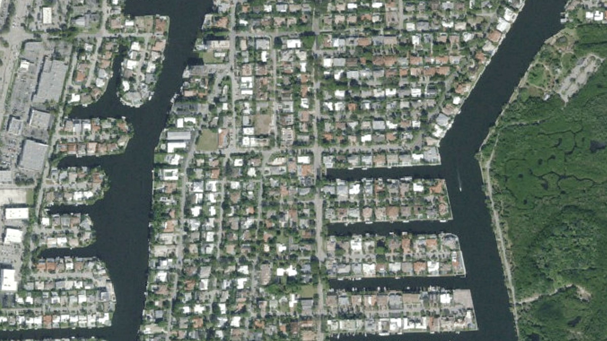
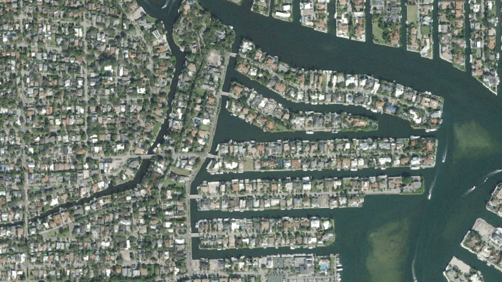
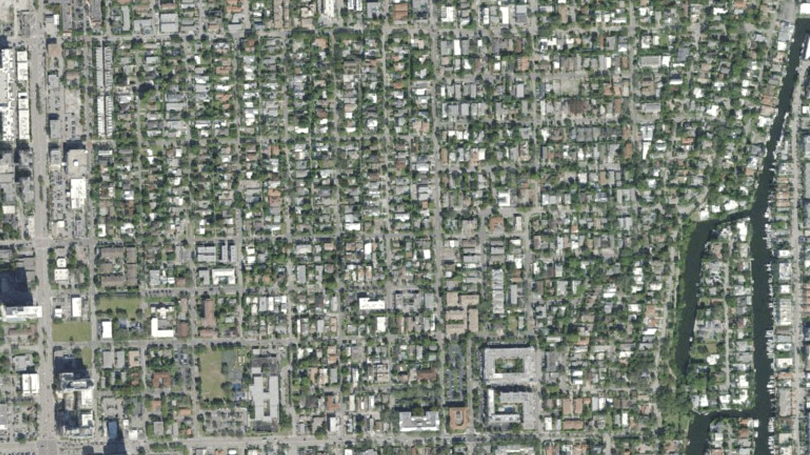

How to Choose Your Neighborhood
Start With How You’ll Live
These five neighborhoods sit within a few miles of each other, but each suits a different way of living. Decide first whether daily life happens on foot or on the water, then narrow it down by the age of the homes, the route to the ocean and how much privacy you want.
| Neighborhood | Began | Setting | On the water |
|---|---|---|---|
| Las Olas Isles | 1920s | Finger isles on both sides of East Las Olas Boulevard | Canal lots; only drawbridges to the inlet |
| Harbor Beach | 1942 | Gated, between the Intracoastal and the ocean | Canal and lagoon lots; one drawbridge to the inlet |
| Coral Ridge | Association, 1949 | About 1,350 homes from Sunrise to Oakland Park Boulevard | Middle River and Intracoastal canals; three drawbridges from the Intracoastal side |
| Rio Vista | Early 1920s | Next to downtown, from the New River to SE 12th Street | New River and isle lots; one drawbridge to the inlet |
| Victoria Park | 1925 | Walkable streets next to downtown | Mostly inland; some lots on Lake Stranahan and the eastern canals |
Questions That Narrow It Down
- Do you want to walk to dinner? Victoria Park, Rio Vista and the Las Olas Isles sit closest to downtown and Las Olas Boulevard.
- How often will you run to the ocean? Count the drawbridges: one from Harbor Beach and Rio Vista’s isles, one or two from the Las Olas Isles, three from Coral Ridge’s Intracoastal canals.
- Gated or open? Harbor Beach has staffed gatehouses, and the Las Olas Isles association pays for a private security service.
- Historic or new? Rio Vista and Victoria Park date to the 1920s land boom, and the city has documented historic buildings in both.
- A big single-family neighborhood? Coral Ridge has about 1,350 houses on its streets and canals.
Each guide covers the neighborhood’s history, water access, pros and cons, with sources. For boats, read the Waterfront guide before you make an offer.
Neighborhood Guides
-
Las Olas Isles
Canal-front isles at the foot of Las Olas Boulevard.
-
Harbor Beach
A gated enclave between the Intracoastal and the ocean.
-

Coral Ridge
Established streets from Sunrise to Oakland Park Boulevard.
-

Rio Vista
Between the New River and the Intracoastal, minutes from downtown.
-

Victoria Park
Walkable streets just northeast of downtown.